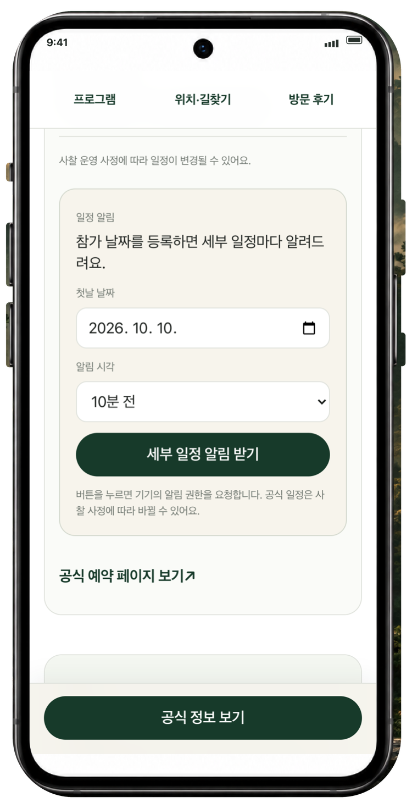
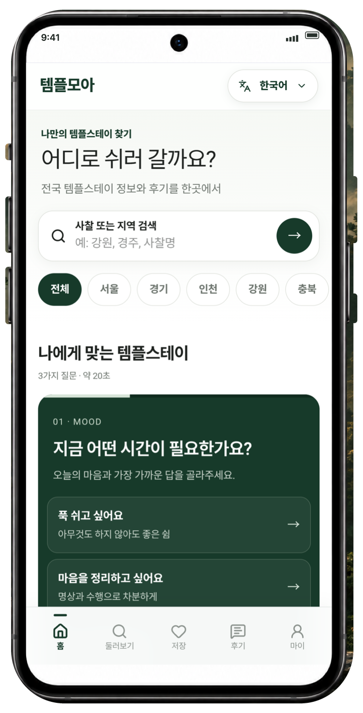
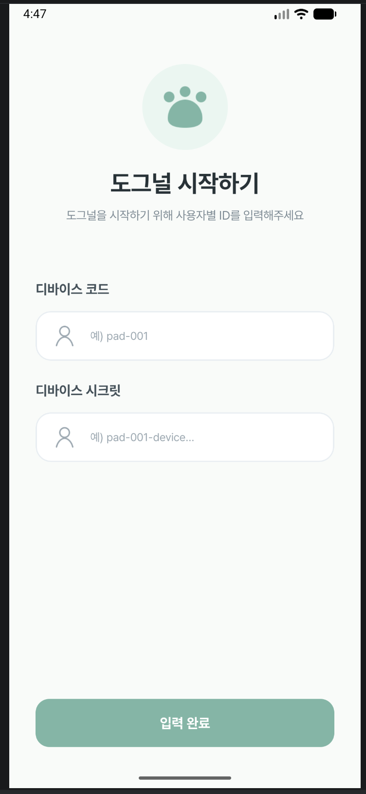
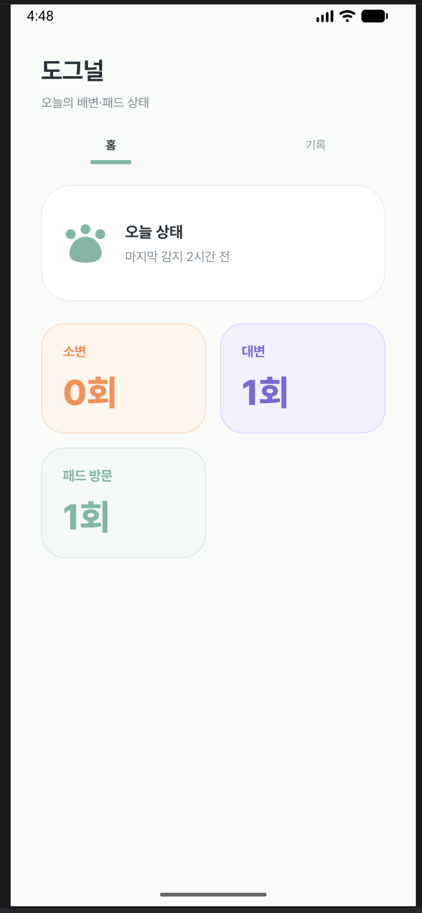
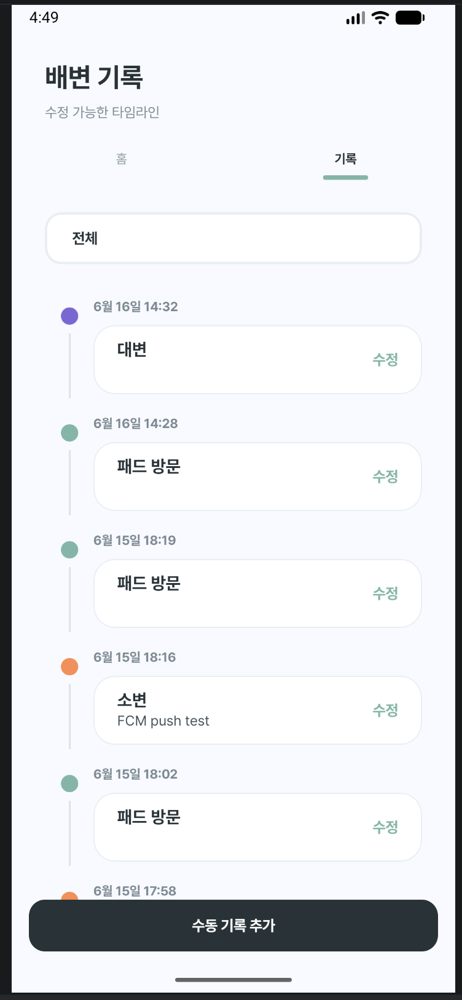

기획 · 검증 · 운영

템플모아
템플스테이 정보를 찾다 느낀 불편에서 출발했습니다. 필요한 기능을 정하고, 직접 사용하며 고쳐 나가는 서비스입니다.
개인 프로젝트 · 기획·검증·출시·운영
구현: Codex 활용
게임을 좋아해 만들기 시작했습니다.
지금은 앱과 VR, 직접 운영하는 서비스로 관심을 넓혀가고 있습니다.

직접 운영하는 서비스부터 팀으로 만든 앱과 VR까지.

템플스테이 정보를 찾다 느낀 불편에서 출발했습니다. 필요한 기능을 정하고, 직접 사용하며 고쳐 나가는 서비스입니다.
개인 프로젝트 · 기획·검증·출시·운영
구현: Codex 활용



센서가 감지한 반려견의 배변 기록을 앱에서 확인합니다. 저는 팀원들의 작업을 Android/iOS 화면과 데이터로 연결했습니다.
담당: 앱 UI 구현 · Supabase 연동
2026.05.28–06.18 · 4주

좋아하던 게임을 직접 만드는 쪽에 서 봤습니다. VR 속 두 사람의 대결과, 끊어진 연결을 다시 잇는 동작을 구현했습니다.
담당: 팀장 · 인게임 구현 · 네트워크 연결
5인 팀 · Unity 부트캠프
화면을 고치고, 데이터를 연결하고, 예외 상황을 다뤘습니다.
2025년 1월, 스타듀밸리를 즐기다가 직접 게임을 만들어 보고 싶어졌습니다. 혼자 시작한 게임 제작은 Unity 부트캠프로 이어졌고, 모바일 게임과 VR을 팀으로 만들었습니다.
이후에는 우아한테크코스에서 Android를 배우며 페어 프로그래밍과 코드 리뷰를 경험했습니다. 도그널에서는 하드웨어와 서버를 맡은 팀원들의 작업을 앱 화면과 데이터로 연결했습니다.
지금은 템플모아를 직접 기획하고 운영하고 있습니다. 기능을 정하고, 모바일에서 써 보고, 불편한 부분을 다시 고칩니다. 직접 만든 것이 실제로 쓰이는 과정까지 경험을 넓혀가고 있습니다.
스타듀밸리에서 시작된 게임 제작에 대한 관심
대한상공회의소 · 모바일·VR 제작
팀 프로젝트 3건에서 팀장 수행
Kotlin 기반 Android 앱·위젯 제작
도그널 협업 · 페어 프로그래밍 · 코드 리뷰
Web · iOS · Android 출시와 사용성 개선
기획하고, 만들고, 운영하는 김선아입니다.